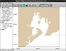

∴ save coastline in Boundary File Format (.bna)
BNA text files store 2d geospatial vectorial data.
Check
this link. They can be used for instance
as coastline input to the NOAA oil spill model GNOME.
The following example creates a gshhs full resolution bna file for Baía de Todos os Santos.

§